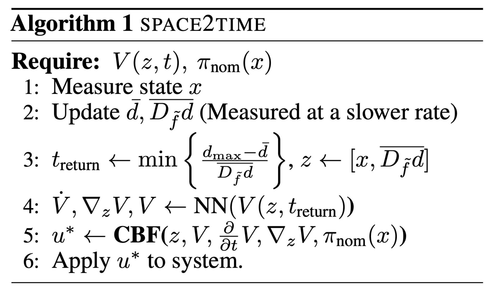
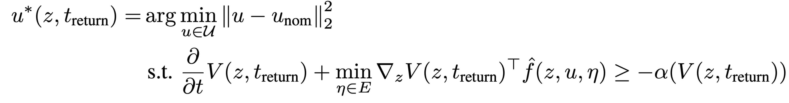

Hardware experiments
Baseline

Ours

$$\mathcal{D}_\text{tv}(\dot{d},t)=\big\{d\in \mathbb{R} \mid \lvert d \rvert \leq \max\{0, d_{\max} - \lvert t \rvert \dot{d}\}\big\}$$
$$\dot{z} = \hat{f}(z,u, \eta) = \begin{bmatrix} \dot{x} \\ \ddot{d} \end{bmatrix} = \begin{bmatrix} f(x)+g(x)u+ \eta\\ 0 \end{bmatrix}$$


@inproceedings{TonkensShinde2025,
author = {Tonkens, S. and Shinde, N. U. and Begzadić, A. and Yip, M. C. and Cortés, J. and Herbert, S.},
title = {From Space to Time: Enabling Adaptive Safety with Learned Value Functions via Disturbance Recasting},
booktitle = {Conference on Robot Learning},
year = {2025},
}